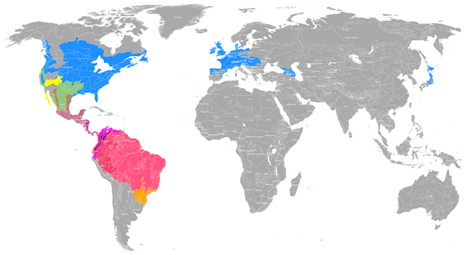
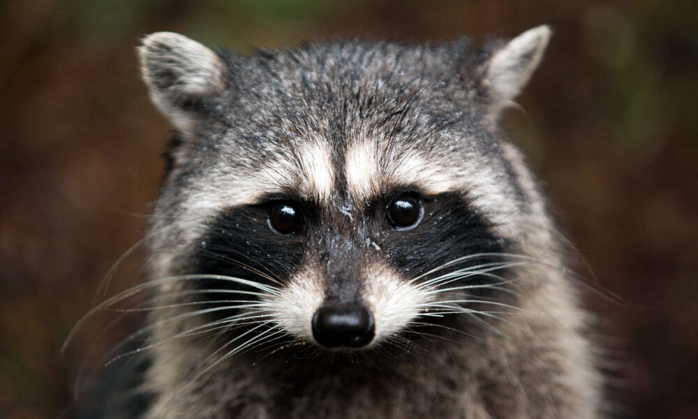
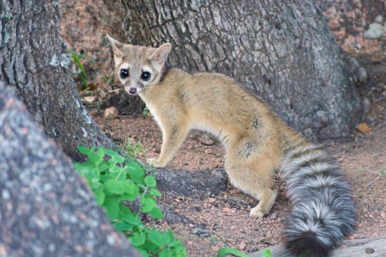
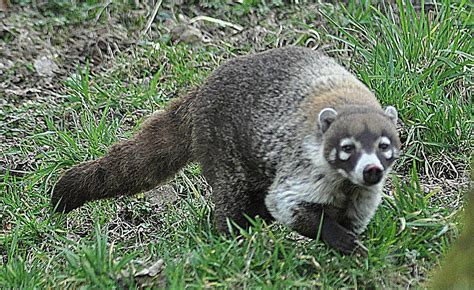
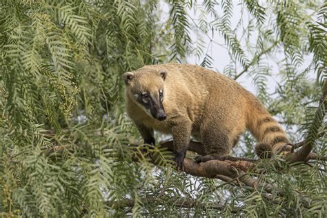
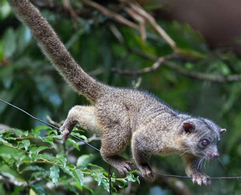
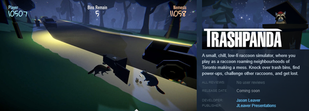

About Racoons
The raccoon (sometimes called the common raccoon to distinguish it from other species, is a mammal native to North America. It is the largest of the procyonid family, having a body length of 40 to 70 cm (16 to 28 in), and a body weight of 5 to 26 kg (11 to 57 lb). Its grayish coat mostly consists of dense underfur, which insulates it against cold weather. Three of the raccoon's most distinctive features are its extremely dexterous front paws, its facial mask, and its ringed tail, which are themes in the mythologies of the indigenous peoples of the Americas relating to the animal. The raccoon is noted for its intelligence, as studies show that it is able to remember the solution to tasks for at least three years. It is usually nocturnal and omnivorous, eating about 40% invertebrates, 33% plants, and 27% vertebrates.
The original habitats of the raccoon are deciduous and mixed forests, but due to their adaptability, they have extended their range to mountainous areas, coastal marshes, and urban areas, where some homeowners consider them to be pests. As a result of escapes and deliberate introductions in the mid-20th century, raccoons are now also distributed across central Europe, the Caucasus, and Japan.
In Europe, the raccoon is included since 2016 in the list of Invasive Alien Species of Union concern (the Union list).[3] This implies that this species cannot be imported, bred, transported, commercialized, or intentionally released into the environment in the whole of the European Union.[4]
Though previously thought to be generally solitary, there is now evidence that raccoons engage in sex-specific social behavior. Related females often share a common area, while unrelated males live together in groups of up to four raccoons in order to maintain their positions against foreign males during the mating season and against other potential invaders. Home range sizes vary anywhere from 3 hectares (7 acres) for females in cities, to 5,000 hectares (12,000 acres) for males in prairies. After a gestation period of about 65 days, two to five young known as "kits" are born in spring. The kits are subsequently raised by their mother until dispersal in late fall. Although captive raccoons have been known to live over 20 years, their life expectancy in the wild is only 1.8 to 3.1 years. In many areas, hunting and vehicular injury are the two most common causes of death.
https://en.wikipedia.org/wiki/RaccoonRocket's Anthem Let's make something clear |
Procynoids Family Range
Raccoons live throughout the continental United States in woods, wetlands, suburbs, parks, cities, and anywhere there is cover, food, and water. Predators of raccoons include the coyote, fisher, bobcat, red fox, and great horned owl.
| Family | Genus | Common Name | Species |
|---|---|---|---|
| Procyonidae | Procyon  | Raccoon (Mapache), Crab-eating raccoon, and Cozumel raccoon | P. lotor, P. cancrivorus, P. pygmaeus |
| Bassariscus | Ring-tailed cat, Cacomistle | B. astutus, B. sumichrasti | |
| Nasua  |
White-nosed Coati, South American coati or Ring-tailed Coati | N. narica, N. nasua | |
| Nasuella  | Mountain coati (Coatí Andino de occidente or Cusumbo) | N. meridensis, N. olivacea | |
| Bassaricyon | Olingos, olinguito | B. alleni, B. gabbii, B. medius, B. neblina |
Raccoons As Pets?
Raccoons are intelligent animals. They can problem solve and have good memories. However, raccoons are wild animals, so taking one from the wild won’t have good results and is likely illegal. If you find a raccoon that has been domesticated or rehabilitated, they can be a loving and playful pet.
It’s only legal in 16 states to own pet raccoons. You’ll need to find out if your state allows them before bringing one into your home.
Domesticated raccoons can be housetrained and become affectionate. But pet racoons like to play as much as they like to cuddle. Tame raccoons can be unpredictable and mischievous. They like to climb and explore and are not suited for cages or small rooms. Owning pet raccoons can be a big commitment, as they need a lot of attention and care.
Various temperaments. Raccoons can be aggressive and might bite anyone — including family, pets, strangers, and other animals. Adult raccoons, if not domesticated, can become aggressive as young as six months old. Some raccoons may be curious and friendly with people. Other raccoons may be skittish and flee when approached.
Disease carriers. Raccoons can carry rabies, and there’s no approved vaccination for rabies, so if your raccoon bites or scratches someone, they may be confiscated and euthanized for testing and as a safety precaution. Raccoons can carry and transmit distemper, Salmonella, and leptospirosis, as well as parasites like fleas, to humans. Baylisascaris is caused by roundworms from raccoons and can be deadly in people.
Mischievous nature. Raccoons are mischievous animals and use their long-fingered paws to open doors, unscrew lids, and do other tasks. This can make it difficult to keep them out of areas or things they shouldn’t get into.
https://pets.webmd.com/can-i-have-a-pet-raccoonJust For Fun
You can play along as the mischievous racoon who gets into the neighborhood garbage in Trash Panda the game:
 https://store.steampowered.com/app/1669320/Trash_Panda/